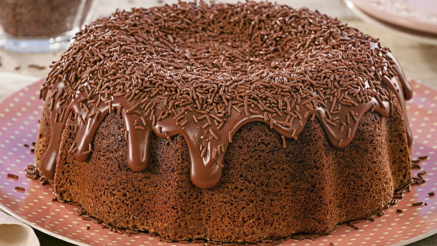

Bolo de Brigadeiro

◄
►
O bolo de brigadeiro, que nasceu no Brasil no século passado, continua em alta, sendo um dos preferidos
dos brasileiros, uma sobremesa tentadora e irresistível! O sabor é marcante,
perfeito para você!